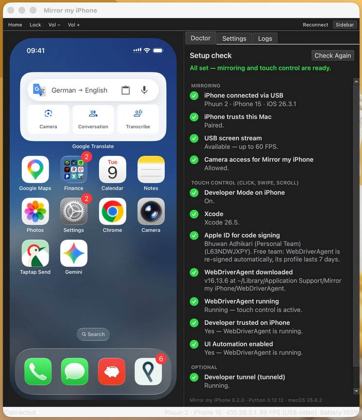

Free and open source for macOS
The free iPhone Mirroring alternative for Mac
Mirror my iPhone shows your iPhone on your Mac at 60 FPS over a USB cable, and you control it with your mouse and trackpad. It works where Apple's iPhone Mirroring doesn't: in the EU and on macOS 13 and 14. And it gives AI agents like Claude a direct API to your phone, so they don't need computer use.
- Works in the EU
- macOS 13 Ventura or later
- 60 FPS over USB
- MCP server and HTTP API
- MIT licensed

What is Mirror my iPhone?
Mirror my iPhone is a free, open-source Mac app that mirrors an iPhone's screen to a Mac over USB at up to 60 FPS and lets you control the iPhone with your mouse, trackpad and keyboard shortcuts. It is an alternative to Apple's iPhone Mirroring that works in the European Union and on older versions of macOS. AI agents can use the same iPhone through its MCP server, command-line tool and local HTTP API.
- Price
- Free, open source (MIT)
- Mac
- macOS 13 Ventura or later, Apple silicon or Intel
- iPhone
- Any iPhone QuickTime Player can show over USB (tested on iPhone 15, iOS 26)
- Connection
- USB data cable
- Regions
- Every country, including the EU
- For AI agents
- MCP server, CLI and HTTP API
- Install
- Homebrew cask or build from source
- Latest version
- 0.2.1
See it in action
An iPhone next to its live mirror on a Mac. The mirrored screen follows every touch.
Everything you need to use your iPhone from your Mac
Smooth 60 FPS
The same USB video stream QuickTime Player records, so scrolling, animations and videos look natural.
Full mouse and trackpad control
Click to tap, drag to swipe, scroll with two fingers, and click and hold for a long press.
Buttons and sound
Home, Lock and volume from the toolbar or the keyboard (⇧⌘H, ⌘L). iPhone audio plays on your Mac.
Built for AI agents
Claude and other agents see the screen, read its buttons and fields, and tap, swipe, type and open apps through an MCP server, CLI or HTTP API.
Guided setup
The built-in Doctor checks your iPhone and Mac and shows how to fix anything missing, often with one click.
Private and free
Everything stays on your Mac and the USB cable. No account, no telemetry, MIT licensed.
For AI agents
Give your AI agent an iPhone, with no computer use required
Mirror my iPhone exposes the iPhone itself to agents. Claude, Cursor, Codex or your own script call tools like tap and describe_ui, and the iPhone does it. The agent never has to look at your Mac's screen or move your mouse.
Computer use Indirect
- The agent screenshots your whole Mac and looks for the mirroring window
- It guesses where buttons are from pixels
- It takes over your mouse and keyboard while it works
- Apple's iPhone Mirroring offers no other way: it has no API
Mirror my iPhone API Direct
- Phone-sized screenshots of just the iPhone
- Exact tap targets for every button, field and cell, from iOS accessibility
- Each gesture returns once the iPhone has done it, with a screenshot of the result
- Your Mac stays yours: keep working while the agent uses the phone
Add it to Claude Code (the app must be open):
$ claude mcp add --scope user mirror-my-iphone -- "/Applications/Mirror my iPhone.app/Contents/Resources/bin/mirror-my-iphone" mcpThen ask "Open Settings on my iPhone and turn on Dark Mode." You watch every agent touch on the mirror as a blue dot. Claude Desktop, Cursor, VS Code and other MCP clients use the same command, and anything else can use the CLI or the HTTP API on 127.0.0.1.
screenshotdescribe_uitapdouble_taplong_pressswipetype_textpress_buttonopen_applist_appsdevice_info
In the EU
“iPhone Mirroring is not available in your country or region”?
That's what Apple's iPhone Mirroring shows across the European Union, where Apple has switched it off, citing the Digital Markets Act (DMA). Apple's own support page says it plainly: iPhone Mirroring is currently unavailable in the European Union.
Mirror my iPhone doesn't use Apple's feature. It reads the screen over USB like QuickTime Player does and taps through Apple's own developer tools, so it works in Germany, France, Italy, Spain, the Netherlands, Poland, Sweden and every other country.
Why iPhone Mirroring is blocked in the EU, and what works instead →

Mirror my iPhone vs Apple iPhone Mirroring
Apple's feature is wireless and built in. Mirror my iPhone needs a cable but works in more places and can be used by agents.
| Mirror my iPhone | Apple iPhone Mirroring | |
|---|---|---|
| Works in the EU | Yes | No |
| Mac | macOS 13 Ventura or later, Apple silicon or Intel | macOS 15 Sequoia or later, Apple silicon or T2 chip |
| iPhone | Any iPhone QuickTime Player can show over USB | iOS 18 or later |
| Connection | USB cable | Wireless (Wi-Fi, Bluetooth, same Apple Account) |
| Control with mouse and trackpad | Yes | Yes |
| Use the iPhone in your hand at the same time | Yes | No, it stays locked |
| API for AI agents | MCP server, CLI, HTTP | None |
| Type with your Mac keyboard | Not yet | Yes |
| iPhone notifications on the Mac | No | Yes |
| Price | Free, open source | Built into macOS |
Compare all iPhone Mirroring alternatives, including QuickTime Player and AirPlay apps →
Install Mirror my iPhone
You need a Mac with macOS 13 or later, an iPhone and a USB cable that carries data. Touch control also needs Xcode, which is free.
-
Install with Homebrew
$ brew tap bhuwanadhikari/mirror-my-iphone https://github.com/bhuwanadhikari/mirror-my-iphone $ brew trust bhuwanadhikari/mirror-my-iphone $ brew install --cask mirror-my-iphone -
Plug in your iPhone and tap Trust
Open Mirror my iPhone and allow camera access when macOS asks. That's how the iPhone's screen reaches your Mac. The first launch takes about a minute to set itself up.
-
Let the Doctor finish the setup
Mirroring works right away. For touch control, the Doctor walks you through Xcode, a free Apple ID and Developer Mode on the iPhone, then builds and installs WebDriverAgent for you.
-
Optional: connect your AI agent
Add the MCP server to Claude Code, Claude Desktop, Cursor or another client. See the agent setup guide.
Frequently asked questions
Is there a free alternative to Apple's iPhone Mirroring?
Yes. Mirror my iPhone is a free, open-source Mac app that mirrors your iPhone over USB at up to 60 FPS and lets you control it with your mouse and trackpad. Unlike Apple's iPhone Mirroring, it works in the EU, runs on macOS 13 Ventura or later, and has an API for AI agents.
Why does my Mac say "iPhone Mirroring is not available in your country or region"?
Apple has switched iPhone Mirroring off in the European Union, citing the Digital Markets Act (DMA). Apple's support page says "iPhone Mirroring is currently unavailable in the European Union." Mirror my iPhone doesn't depend on Apple's feature, so it works there. More about the EU block.
Does Mirror my iPhone work in Germany, France and the rest of the EU?
Yes. It reads the iPhone's screen over USB, like QuickTime Player does, and taps through Apple's developer tools, so it works in every EU country and everywhere else.
Can I mirror my iPhone on macOS Ventura or Sonoma?
Yes. Apple's iPhone Mirroring needs macOS 15 Sequoia and iOS 18, but Mirror my iPhone runs on macOS 13 Ventura and later, on Apple silicon and Intel Macs.
Can I mirror my iPhone to my Mac with a USB cable?
Yes. Mirror my iPhone uses a USB data cable. QuickTime Player can also show an iPhone over USB, but only Mirror my iPhone lets you control it with your mouse.
Can I control my iPhone from my Mac with a mouse or trackpad?
Yes. Click to tap, drag to swipe, scroll with the trackpad, and click and hold for a long press. Home, Lock and volume are in the toolbar and on keyboard shortcuts.
Does it work wirelessly?
No. Mirror my iPhone needs a USB cable that carries data.
Do I need a paid Apple Developer account or a jailbreak?
No. Mirroring needs neither. Touch control works with a free Apple ID in Xcode and Developer Mode on the iPhone.
Can AI agents like Claude control my iPhone?
Yes. Mirror my iPhone includes an MCP server for Claude Code, Claude Desktop, Cursor, VS Code, Codex CLI, Gemini CLI and other MCP clients, plus a CLI and a local HTTP API. Agents take screenshots, list the elements on screen, and tap, swipe, type, press buttons and open apps. Set up your agent.
Do AI agents need computer use to control the iPhone?
No. Agents call tools that act on the iPhone directly. They don't screenshot your Mac or move your mouse, they get exact tap targets from iOS accessibility, and you can keep using your Mac while they work.
Is Mirror my iPhone safe and private?
Everything stays on your Mac and the USB cable. There is no account and no telemetry, and the source code is open (MIT license). The agent API only listens on 127.0.0.1, needs a token only your user account can read, and refuses requests from web pages.
Does Mirror my iPhone work on Windows?
No. It is a Mac app and needs macOS 13 or later.
Can I type on the iPhone with my Mac keyboard?
Not yet. AI agents and scripts can type text into the focused field through the API, but typing on your Mac keyboard isn't supported yet.
Guides
iPhone Mirroring not available in your country?
Why Apple blocks it in the EU, and how to mirror your iPhone anyway.
Let AI agents control your iPhone
MCP server, CLI and HTTP API for Claude, Cursor, Codex and your own scripts.
iPhone Mirroring alternatives compared
Apple iPhone Mirroring, Mirror my iPhone, QuickTime Player and AirPlay apps.